01ภาพรวม
หลังเจ็ดปีของสงครามทั่วกาแล็กซี กองทัพของ Warmaster Horus บุกเข้าระบบสุริยะเพื่อทำสิ่งที่ไม่มีใครเคยคิดว่าจะเกิดขึ้น — โจมตี Terra และพระราชวังของจักรพรรดิ ศึกนี้เรียกว่า Siege of Terra (ซีจ ออฟ เทอร์รา) หรือ Battle of Terra
ฝ่ายภักดีอยู่ในสภาพเสียเปรียบอย่างหนัก Legion ภักดีส่วนใหญ่ติดอยู่ไกล — Ultramarines และ Dark Angels อยู่หลัง Ruinstorm, Space Wolves กำลังถูก Alpha Legion ไล่ล่า, Iron Hands/Salamanders/Raven Guard แทบสูญสิ้นที่ Isstvan มีเพียง Imperial Fists, White Scars และ Blood Angels ที่อยู่ปกป้อง Terra
เรื่องราวของ Siege ถูกเล่าครั้งแรกแบบสั้น ๆ ในหนังสือยุคแรกของ 40K ต่อมาถูกขยายเป็นนิยายชุด The Siege of Terra ของ Black Library (2019–2024) ซึ่งเพิ่มรายละเอียดมากมายและปรับบางจุด หน้านี้เล่าเหตุการณ์หลักที่ทั้งสองฉบับตรงกัน และบอกไว้เมื่อรายละเอียดต่างกัน
02การเตรียมการ: Dorn สร้างป้อม
Rogal Dorn ผู้พิทักษ์ Terra (Praetorian) ใช้เวลาหลายปีหลังข่าวจาก Isstvan เปลี่ยนพระราชวังจักรพรรดิ — ซึ่งเดิมเป็นพระราชวังที่สวยงามขนาดเท่าทวีป — ให้เป็นป้อมปราการที่ใหญ่ที่สุดในประวัติศาสตร์ สร้างกำแพงหลายชั้น ปืนใหญ่ และหอคอยป้องกัน พร้อมเรียกกำลังทั้งหมดที่ยังติดต่อได้กลับมา
กำลังฝ่ายภักดี
- Imperial Fists (Rogal Dorn)
- White Scars (Jaghatai Khan)
- Blood Angels (Sanguinius) — มาถึงหลังฝ่า Ruinstorm
- Legio Custodes (Constantin Valdor) และ Sisters of Silence
- ทหาร Imperial Army ราว 1.5–2 ล้านนาย
- Titan Legion ฝ่ายภักดี เช่น Legio Ignatum
กำลังฝ่ายกบฏ
- Sons of Horus, World Eaters, Death Guard, Emperor's Children, Iron Warriors, Thousand Sons
- Word Bearers ราว 5,000 นาย (Zardu Layak) และ Night Lords บางส่วน
- Dark Mechanicum และ Titan Legion ทรยศ เช่น Legio Mortis
- ทหารมนุษย์ที่แปรพักตร์ ลัทธิ Chaos และมนุษย์กลายพันธุ์
- ปีศาจ Chaos จำนวนมหาศาล
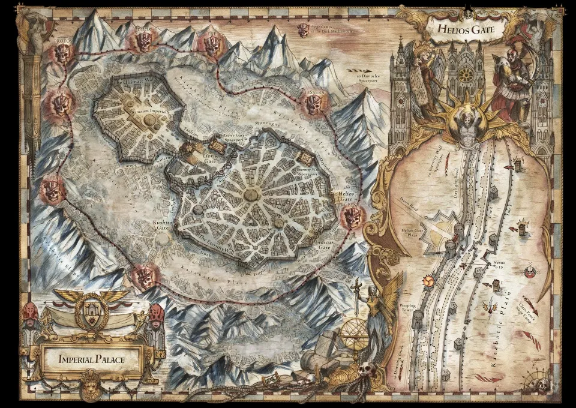
03Solar War: ศึกในระบบสุริยะ
ก่อนจะถึง Terra ฝ่ายกบฏต้องฝ่าระบบสุริยะก่อน ศึกหลายปีที่เรียกรวมว่า Solar War มีทั้งการแทรกซึม การบุกของ Alpha Legion ที่ Pluto (ซึ่ง Dorn ดวลกับ Alpharius) และการรบของกองเรือ หลังศึก Beta-Garmon ซึ่งเป็นการต้านทานใหญ่ครั้งสุดท้ายนอกระบบสุริยะ Horus รวมทัพที่ Ullanor แล้วบุกเข้ามา
ฝ่ายกบฏแวะเติมเสบียงที่ ดาวอังคาร ซึ่งตกเป็นของ Dark Mechanicum แล้ว จากนั้นการรบในวงโคจรกินเวลาราว 30 วัน แนวป้องกันบนดวงจันทร์ Luna ทำลายเรือฝ่ายกบฏได้กว่าหนึ่งในสี่ แต่สุดท้ายกองเรือฝ่ายภักดีก็ถูกขับไล่ แท่นปืนในวงโคจรของ Terra ถูกทำลายทั้งหมด
04การยกพลขึ้นบกและกำแพงพระราชวัง
หลังยิงถล่มจากวงโคจรหลายวัน ฝ่ายกบฏยกพลลงด้วยดรอปพอด ยึดท่าอวกาศ Eternity Wall และ Lion's Gate ที่อยู่ใกล้พระราชวังได้ภายในไม่กี่ชั่วโมง จากนั้นยานขนส่งขนาดมหึมาก็ขน Titan รถถัง และทหารนับล้านลงมา ลัทธิ Chaos ทำพิธีสังเวยจนกำแพงระหว่าง Warp กับโลกบางลง ปีศาจชั้นสูงปรากฏบนผืนดินของ Terra

Angron ที่หน้ากำแพง
Angron ซึ่งกลายเป็น Daemon Prince ของ Khorne แล้ว มายืนหน้ากำแพงเรียกร้องให้ฝ่ายภักดียอมแพ้ บอกว่าพวกเขาถูกตัดขาดและปกป้องผู้ปกครองที่ไม่คู่ควร ทหารจำนวนมากเกือบจะยอม จน Sanguinius ปรากฏตัวบนกำแพง ทั้งสองจ้องตากัน และ Angron ก็ถอยกลับไปประกาศกับทหารว่า "จะไม่มีการยอมแพ้"
กำแพงแตก
ฝ่ายกบฏปีนกำแพงสามครั้งและถูก Blood Angels ผลักกลับทั้งสามครั้ง Horus จึงสั่ง Titan ของ Legio Mortis นำโดย Imperator Titan ชื่อ Dies Irae ทุบกำแพงจนเป็นช่องโหว่ ฝ่ายกบฏทะลักเข้ามา ฝ่ายภักดีต้องถอยเข้าไปในเขาวงกตของพระราชวัง
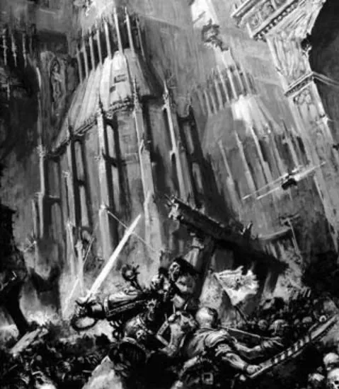
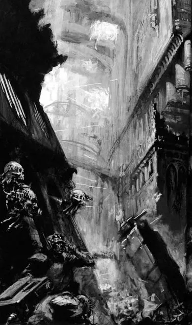
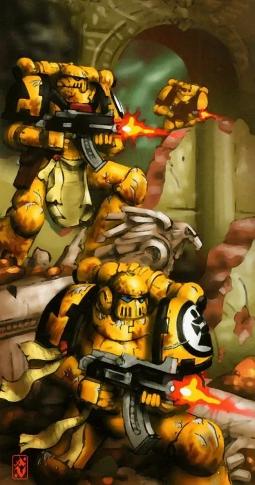
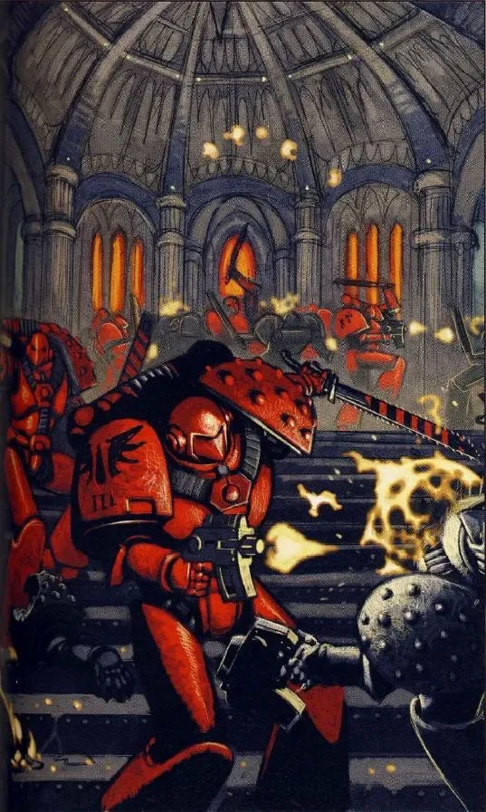
05Jaghatai Khan ยึด Lion's Gate
White Scars ของ Jaghatai Khan ซึ่งรบแบบเคลื่อนที่เร็วนอกกำแพง เห็นว่าการโจมตีปีกของศัตรูไม่ได้ผล Khan จึงเปลี่ยนแผน รวม White Scars กับหน่วยรถถังที่เหลือของ Imperial Army บุกท่าอวกาศ Lion's Gate ตอนรุ่งสาง ยึดคืนได้สำเร็จ แล้วเปิดปืนเลเซอร์ป้องกันยิงยานขนส่งของฝ่ายกบฏที่กำลังลงจอด
การกระทำครั้งเดียวนี้ตัดกำลังเสริมของ Horus ลงครึ่งหนึ่ง ฝ่ายกบฏต้องหันมายึดท่าคืนหลายครั้ง (ในนิยายชุดใหม่ Khan ต้องดวลกับ Mortarion ที่กลายเป็นปีศาจของ Nurgle และบาดเจ็บสาหัส)
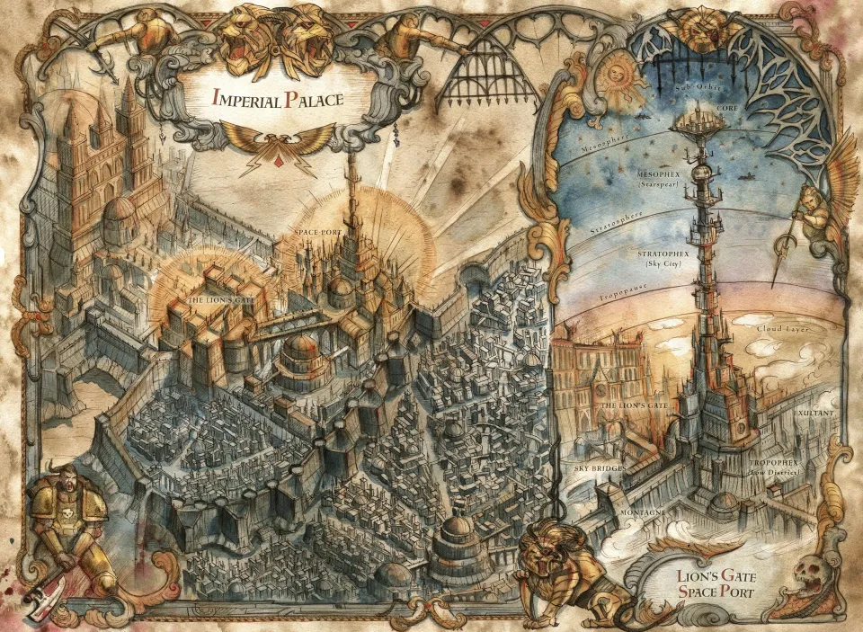
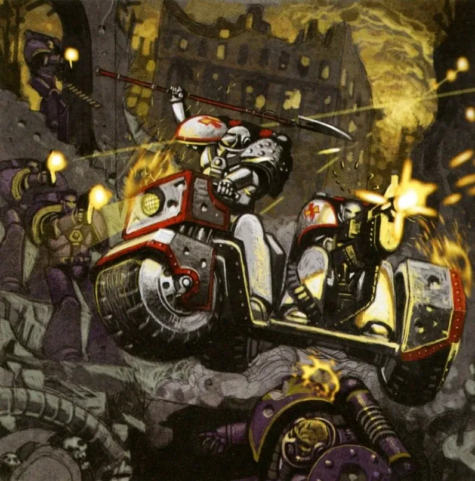
06ประตู Eternity Gate
ฝ่ายภักดีถูกต้อนจนถึง Eternity Gate ประตูเดียวที่เข้าสู่ใจกลางพระราชวัง (Sanctum Imperialis) Blood Angels และ Imperial Fists ยันศัตรูไว้ให้ผู้รอดชีวิตถอยเข้าไป ทันใดนั้น Ka'bandha Bloodthirster ที่เคยพบกันที่ Signus ก็ท้า Sanguinius ดวล
ทั้งสองบินขึ้นฟ้าต่อสู้กันเหนือหัวทหารทั้งสองฝ่าย Sanguinius ที่เหนื่อยล้าถูกทุ่มลงพื้นจนคอนกรีตแตก ทุกคนคิดว่าเขาพ่ายแล้ว แต่เขาลุกขึ้นบินกลับไป จับ Ka'bandha แล้วหักหลังปีศาจบนเข่า ก่อนโยนร่างลงใส่กองทัพศัตรู ประตู Eternity Gate ปิดลงหลังผู้ภักดีกลุ่มสุดท้ายเข้าไปได้
ปีศาจตายจริงไม่ได้ Ka'bandha ถูกส่งกลับ Warp เท่านั้น — และจะกลับมาแก้แค้นลูกหลานของ Sanguinius อีกครั้งในยุค 40K ที่ Baal
07จักรพรรดิกับบัลลังก์ทองคำ
ตลอดการปิดล้อม จักรพรรดิไม่ได้อยู่บนกำแพง พระองค์ติดอยู่ใต้พระราชวังกับ Golden Throne เครื่องขยายพลังจิตโบราณ เพื่อกั้นปีศาจที่พยายามทะลักเข้ามาทางโครงการ Webway ที่พังเพราะ Magnus (ดู การเผา Prospero)
เมื่อถึงเวลาที่จักรพรรดิต้องออกไปเผชิญหน้า Horus Malcador the Sigillite ผู้สำเร็จราชการและเพื่อนเก่าแก่ที่สุดของพระองค์ ขึ้นนั่งแทนบนบัลลังก์ทั้งที่รู้ว่าพลังจะเผาผลาญเขาจนตาย ก่อนหน้านั้นเขายังรวบรวมผู้คนสิบสองคนที่จะกลายเป็นรากฐานของ Inquisition จักรพรรดิประกาศให้เขาเป็น "Malcador the Hero"
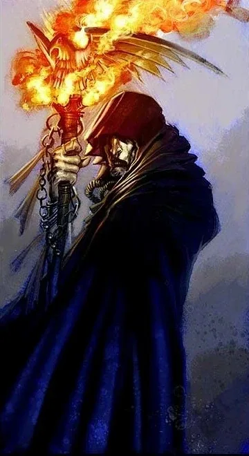
08การดวลบนเรือ Vengeful Spirit
ฝ่ายกบฏใกล้ชนะ แต่ข่าวมาถึง Horus ว่า Dark Angels และ Space Wolves กำลังจะถึง Terra ภายในไม่กี่ชั่วโมง โดยมี Ultramarines ตามหลังมา ถ้ากำลังเสริมมาถึง ทุกอย่างจะจบ Horus จึงลดโล่พลังงานของเรือธง Vengeful Spirit บันทึกต่างกันว่าเป็นเพราะเขาสำนึกผิดในวินาทีสุดท้าย หรือเป็นการท้าทายให้จักรพรรดิขึ้นมาดวลกันตัวต่อตัว
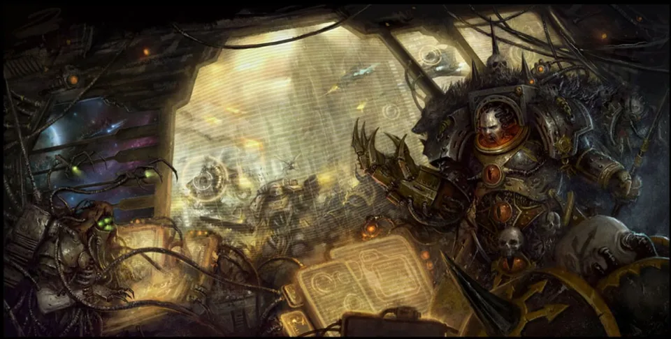
เทเลพอร์ตขึ้นเรือ
จักรพรรดิ, Sanguinius, Rogal Dorn, Custodes และทหารผ่านศึกของ Imperial Fists และ Blood Angels เทเลพอร์ตขึ้นเรือ แต่พลัง Chaos ของ Horus ทำให้ทุกคนกระจัดกระจายไปคนละส่วนของเรือ
Sanguinius ไปถึงก่อน
Sanguinius พบ Horus เป็นคนแรก Horus ชวนเขาเข้าร่วมเป็นครั้งสุดท้าย เมื่อถูกปฏิเสธ Horus ที่อยู่ในจุดสูงสุดของพลัง Chaos ก็สังหาร Sanguinius พี่น้องที่สนิทที่สุดของเขา (บางฉบับเล่าว่า Sanguinius ทิ้งรอยแผลบนชุดเกราะของ Horus ไว้ก่อนตาย)
พ่อกับลูก
จักรพรรดิเข้ามาพบศพ Sanguinius ที่เท้าของ Horus Horus ยื่นข้อเสนอให้บิดาคุกเข่า การดวลที่เป็นทั้งกายภาพและพลังจิตเริ่มขึ้น จักรพรรดิไม่อาจใช้พลังเต็มที่กับลูกชายที่รัก และบาดเจ็บสาหัส
ผู้กล้าที่ไร้ชื่อ
ทหารผู้หนึ่งเข้ามาขวาง Horus และถูกสังหารด้วยพลังจิต ฉบับเก่าบอกว่าเป็นทหารธรรมดาชื่อ Ollanius Pius (บางฉบับว่าเป็น Custodian หรือ Terminator ของ Imperial Fists) ส่วนนิยายชุดใหม่เล่าบทบาทนี้ผ่าน Ollanius Persson ชายอมตะที่เป็นสหายเก่าแก่ของจักรพรรดิ — ในฉบับเก่า ความโหดร้ายที่ Horus ฆ่าคนผู้นี้อย่างไม่ใยดีคือสิ่งที่ทำให้จักรพรรดิตระหนักว่าลูกชายไม่อาจกลับมาได้อีกแล้ว
จุดจบของ Horus
จักรพรรดิรวบรวมพลังทั้งหมด ทำลายร่างของ Horus ในวินาทีสุดท้าย Horus มองบิดาด้วยความสำนึกผิด แต่จักรพรรดิรู้ว่าถ้าวิญญาณยังอยู่ Chaos จะนำกลับมาใช้อีก พระองค์จึงทำลายวิญญาณของ Horus จนสิ้น
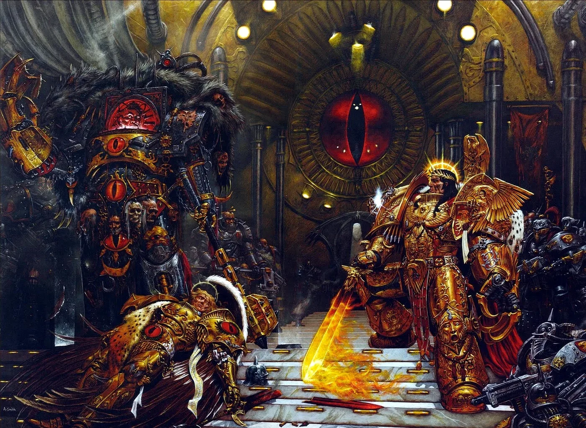
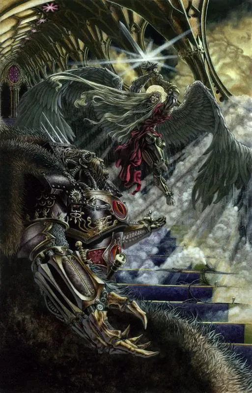
09หลังการดวล
การตายของ Horus ส่งคลื่นพลังจิตไปทั่วระบบสุริยะ ปีศาจถูกดีดกลับเข้า Warp ฝ่ายกบฏบน Terra ตื่นตระหนกและแตกพ่าย ขณะเดียวกัน Blood Angels ที่รับรู้ถึงความตายของ Primarch ก็คลั่งเข้าใส่ศัตรู — ต้นกำเนิดของ Black Rage การถอยกลายเป็นการแตกพ่าย และการแตกพ่ายกลายเป็นการสังหารหมู่
Rogal Dorn ไปถึงสะพานเรือเป็นคนสุดท้าย เขาพบร่าง Sanguinius และจักรพรรดิที่ใกล้ตาย พระองค์กระซิบสั่งให้นำร่างไปยัง Golden Throne ที่นั่นพวกเขาพบ Malcador ที่ถูกพลังเผาผลาญจนเหลือแต่โครง เมื่อถูกนำลงจากบัลลังก์ ร่างของเขาก็สลายเป็นผงธุลี
Tech-priest ดัดแปลง Golden Throne ให้เป็นเครื่องพยุงชีวิต จักรพรรดิฟื้นขึ้นช่วงสั้น ๆ เพื่อให้คำสั่งสุดท้าย จากนั้นก็ไม่เคยพูดอีกเลยเป็นเวลาหมื่นปี
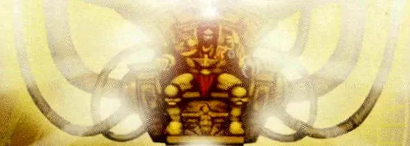

10ผลที่ตามมา
- Legion ทรยศหนี — ถูกไล่ล่าใน Great Scouring จนหนีเข้า Eye of Terror
- จักรพรรดิ "ตายครึ่งเป็น" — ร่างกายเน่าเปื่อยบนบัลลังก์ แต่จิตยังคุมแสง Astronomican ที่นำทางเรือทั้งจักรวรรดิ และต้องใช้วิญญาณของ psyker หลายร้อยคนต่อวันหล่อเลี้ยง
- กำเนิดศาสนา — ผู้คนเริ่มบูชาจักรพรรดิเป็นพระเจ้า สิ่งที่พระองค์เกลียดที่สุดกลายเป็นศาสนาประจำจักรวรรดิ
- คำสาปของ Blood Angels — ภาพความตายของ Sanguinius ฝังอยู่ในพันธุกรรมของทุก Chapter สายเลือดเดียวกัน
- Imperial Fists — Dorn เสียใจที่ไปไม่ถึงทัน และ Imperial Fists ยังคงเป็นผู้พิทักษ์ Terra ในยุคต่อมา
ภาพที่ใช้ในหน้านี้เป็นภาพประกอบในหนังสือของ Games Workshop หลายยุค รายละเอียดของชุดเกราะและฉากจึงไม่ตรงกันทุกภาพ
11แหล่งข้อมูลและหมายเหตุ
เนื้อหาหน้านี้สรุปและแปลเป็นภาษาไทยจากบทความใน Warhammer 40k Wiki (Fandom) ซึ่งเรียบเรียงจากหนังสือ Codex, หนังสือชุด Horus Heresy ของ Forge World และนิยาย Black Library ด้านล่างนี้ (ตรวจสอบ ต.ค. 2026)
เนื้อเรื่อง Warhammer ถูกเขียนเพิ่มและแก้ไขมาตลอดหลายสิบปี ปี จำนวน และรายละเอียดบางจุดต่างกันไปตามหนังสือแต่ละเล่ม หน้านี้ใช้ฉบับที่แหล่งอ้างอิงส่วนใหญ่ยอมรับ และบอกไว้เมื่อมีหลายฉบับ